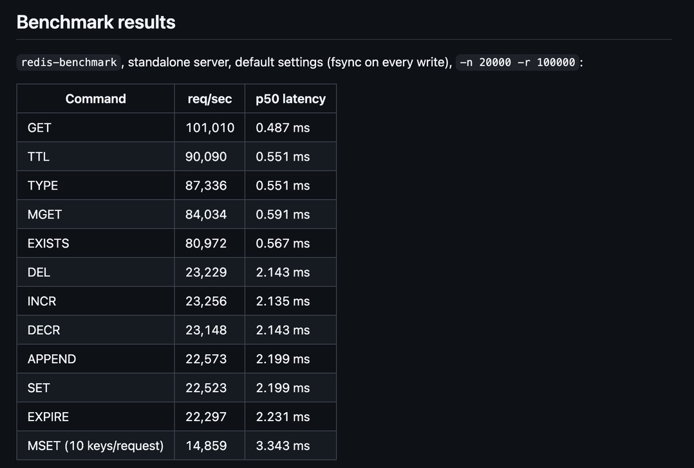

Redis Clone
- requests/sec on reads
- 101,010
- p50 latency on GET
- 0.487 ms
- concurrent clients, zero lost updates
- 50+
- automated tests
- 40+
An in-memory key-value server built from raw TCP sockets, with the RESP2 wire protocol hand-written from the spec rather than borrowed from a library. I validated it against the real redis-py client with zero client-side modifications. Anything written against actual Redis works against this without knowing the difference.
It implements the full core command set (GET, SET, DEL, EXISTS, INCR/DECR, APPEND, MSET/MGET, TYPE) plus TTL/EXPIRE with both passive and active expiration, and holds up under 50+ simultaneous clients with zero lost updates. Durability comes from a crash-safe append-only log; replication comes from a primary-replica setup with full resync on connect, real-time write streaming, and replicas enforced read-only. I validated both by killing the server mid-write and confirming full recovery, across an automated suite of 40+ tests spanning pytest, real client-library integration, and subprocess-spawned crash-recovery and replication scenarios.
Benchmarked at 101,010 requests/sec on reads (sub-millisecond p50) and about 23,000 requests/sec on durable writes. I traced the write-path bottleneck to the per-command fsync() call: the exact durability-versus-throughput tradeoff real databases have to make.
